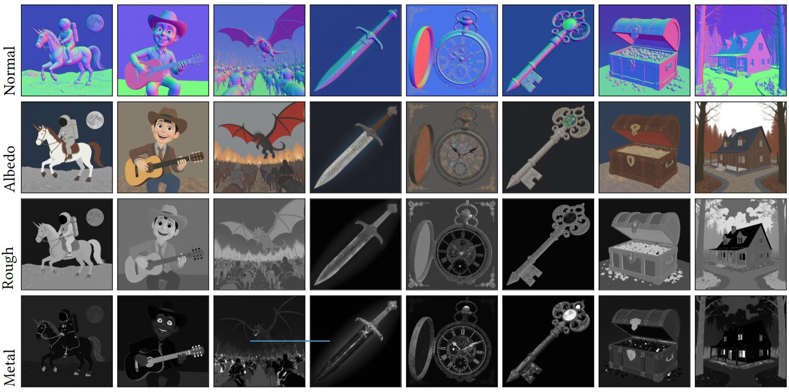

Our method generates intrinsic components, such as normal, albedo, roughness and metallic maps, given a text prompts. The decomposed image prior can be used for various applications, such as re-lighting, material editing, and texture generation.
We can use physically-based rendering to render our generated scene under arbitrary lighting conditions.
Industrial...
Greek...
Tuscan...
Baroque...
We compare against two recent intrinsic image decomposition methods, IID and RGBX. We generate an image with FLUX-dev 1.0, then use the baseline methods to obtain the PBR components. Finally, we rerender the scenes under different lighting conditions.
We use a diverse set of text prompts to produce our PBR maps, as well as the input RGB images for the baseline methods. This highlights our models’ capability to retain the generalized prior of the pretrained text-to-image model. Our method better captures the semantic meaning of the individual intrinsic properties. For example, there are no baked-in lighting effects in the albedo, and the metallic/roughness maps are sharper with more intricate details. This leads to more realistic renderings and lighting effects.
@article{kocsis2025intrinsix,
author = {Kocsis, Peter and H\"{o}llein, Lukas and Nie\{ss}ner, Matthias},
title = {IntrinsiX: High-Quality PBR Generation using Image Priors},
journal = {arXiv preprint},
year = {2025}}